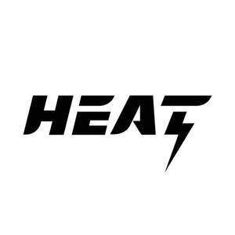

Trade Mark Journal No.2025/031 1 August 2025
UK00004222531 21 June 2025 (25,28)

- Class 25
- Clothing; Jackets [clothing]; Knitwear [clothing]; Ready-to-wear clothing; Woolen clothing; Garments for protecting clothing; Headbands [clothing]; Gloves [clothing]; Gloves as clothing; Clothes; Jerseys [clothing]; Shorts [clothing]; Parts of clothing, footwear and headgear; Hoods [clothing]; Windproof clothing; Wristbands [clothing]; Belts [clothing]; Rainproof clothing; Waterproof clothing; Casual clothing; Jackets being sports clothing; Bottoms [clothing]; Clothing for leisure wear; Latex clothing; Trunks being clothing; Leisure clothing; Clothing for sports; Sports clothing; Athletic clothing; Tops [clothing]; Clothing for cycling; Weatherproof clothing; Water-resistant clothing; Clothing for skiing; Beach clothing; Thermal clothing; Men's clothing; Dance clothing; Sportswear; Casualwear; Footwear for sports; Sports footwear; Shoes for leisurewear; Sports garments; Footwear for sport; Footwear for use in sport; Athletic footwear; Menswear; Athletics footwear; Leisurewear; Footwear; Leisure footwear; Sneakers [footwear]; Gymwear; Outerwear; Sports clothing [other than golf gloves]; Footwear for snowboarding; Gloves for apparel; Casual footwear; Moisture-wicking sports shirts; Surfwear; Clothes for sports; Denims [clothing]; Footwear for women; Footwear for men; Sports shirts; Clothes for sport; Sportswear incorporating digital sensors; Beach footwear; Sport shirts; Swimwear; Footwear not for sports; Trainers [footwear]; Moisture-wicking sports pants; Beachwear; Men's underwear; Sports jackets; Sports shoes; Jogging bottoms [clothing]; Articles of sports clothing; Rainwear; Sport shoes; Sports pants; Soccer shirts; Sports jerseys and breeches for sports; Gloves; Boxing shoes; Boxing shorts; Mountaineering gloves; Cycling Gloves; Snowboard gloves; Motorcycle gloves; Ski gloves; Riding gloves; Riding Gloves; Boxer shorts; Boots for sport; Gym shorts; American football shorts; Combative sports uniforms; Sports socks; Socks; Men's socks; Socks for men; Shoes; Pants.
- Class 28
- Boxing gloves; Gloves (Boxing -); Sparring gloves; Karate gloves; Gloves for sports; Football gloves; Baseball gloves; Gloves (Baseball -); Golfing gloves; Boxing rings; Golf gloves; Gloves (Golf -); Gloves for golf; Swimming gloves; Punching balls for boxing; Windsurfing gloves; Punching balls [for boxing practice]; Water-skiing gloves; Taekwondo mitts; Webbed gloves for swimming; Belts for weightlifting; Punching bags for boxing; Gloves for American football; Leg weights for sports training; Sport balls; Sports training apparatus; Rings for sports; Sports balls; Balls for sports; Supporters (Men's athletic -) [sports articles]; Men's athletic supporters [sports articles]; Gym balls; Belts (Weight lifting -) [sports articles]; Weight lifting belts [sports articles].
Sam Alexander Coley